Inicio
Somos un negocio familiar especializado en Pollos, Parrillas, Hamburguesas entre otras variadas ofertas que harán de su estancia en nuestro local una experiencia única.
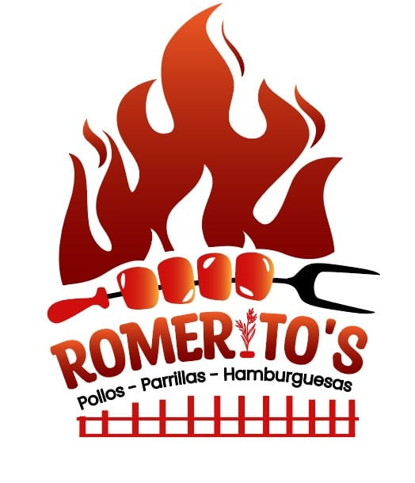
Somos un negocio familiar especializado en Pollos, Parrillas, Hamburguesas entre otras variadas ofertas que harán de su estancia en nuestro local una experiencia única.
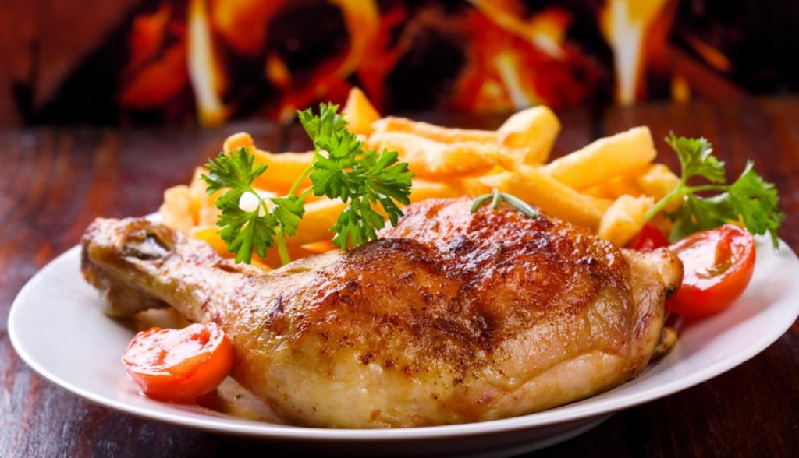
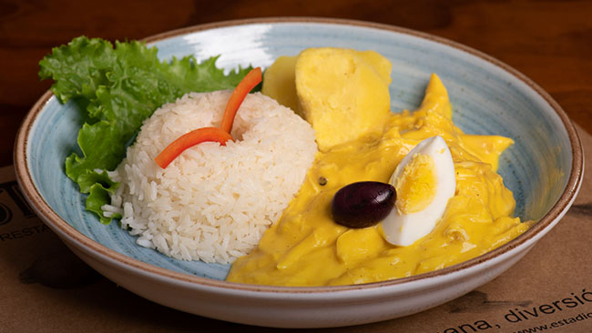
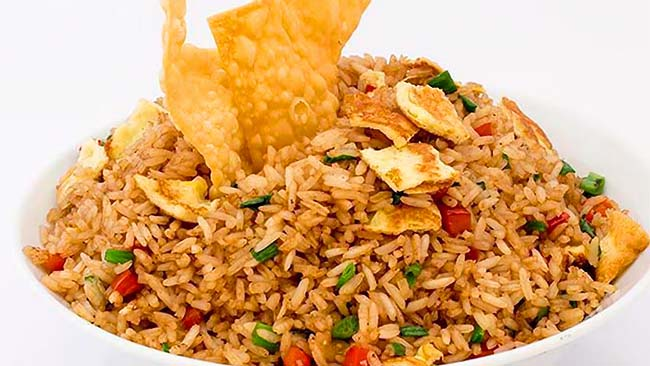
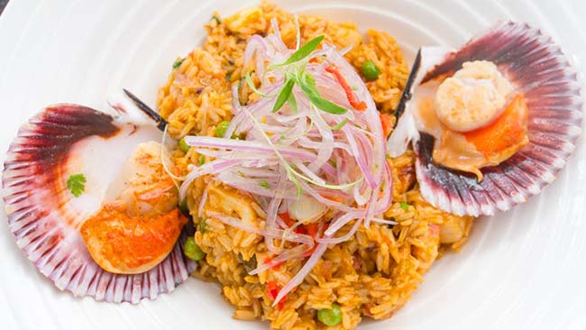
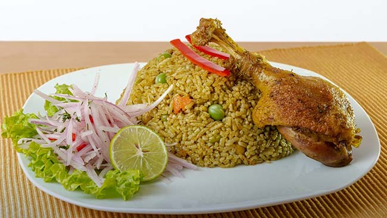
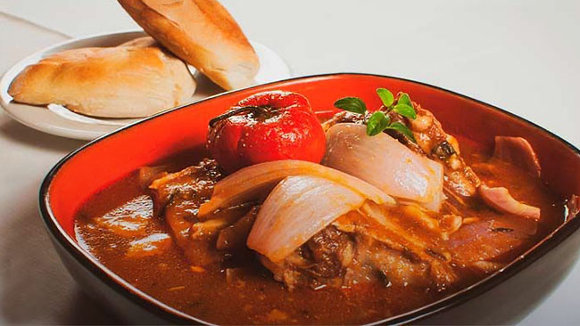
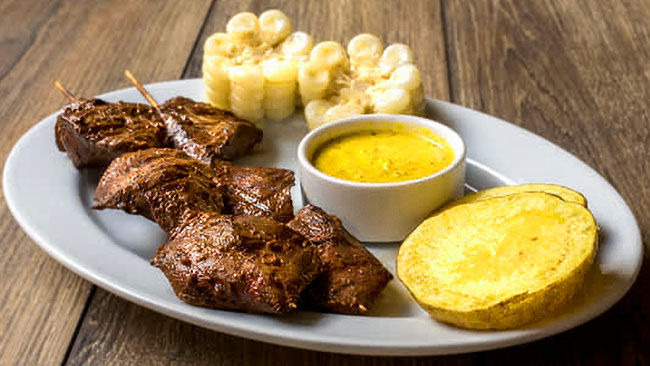
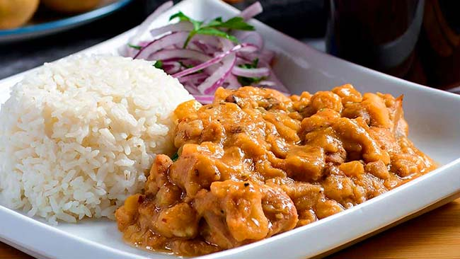
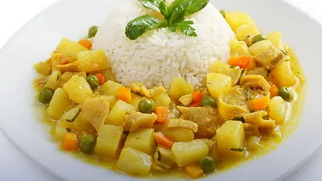
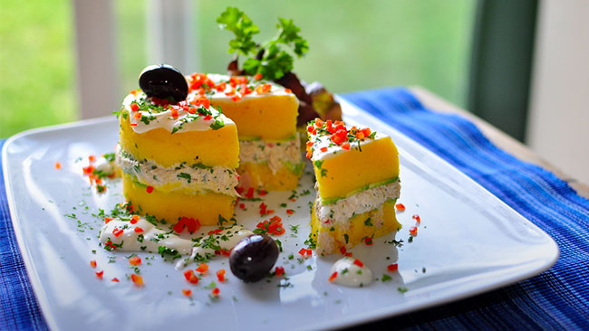
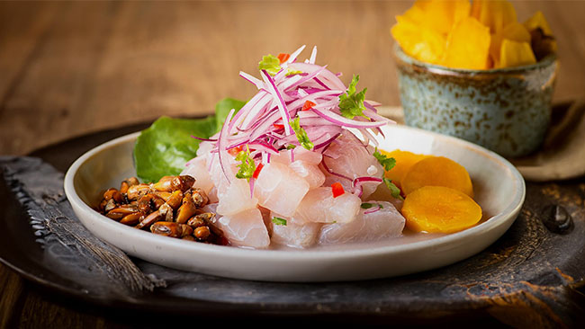
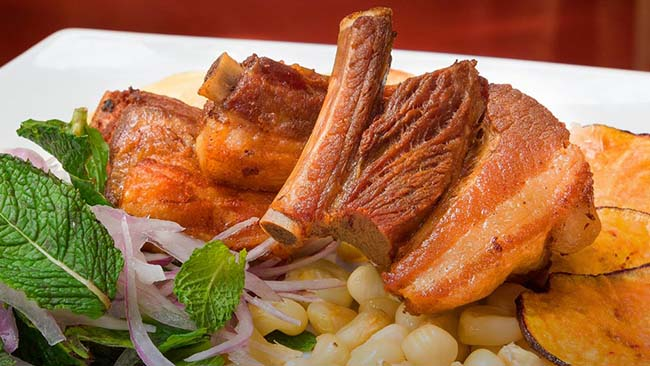
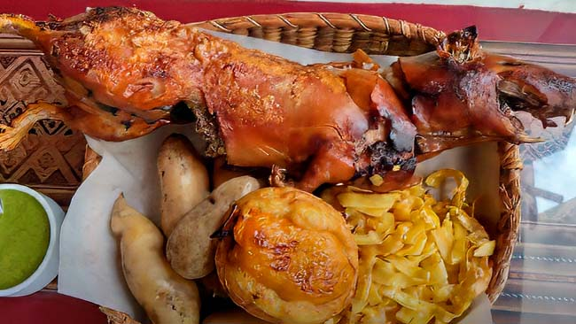
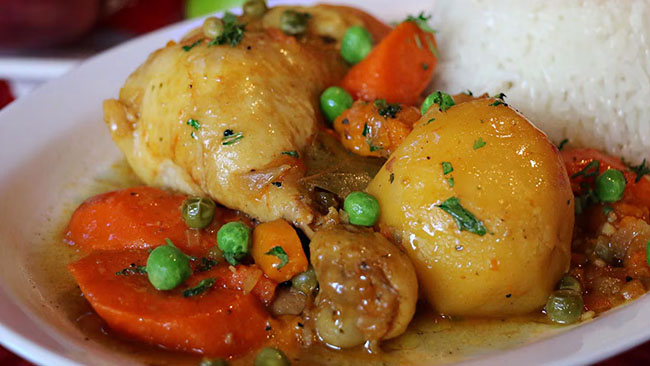
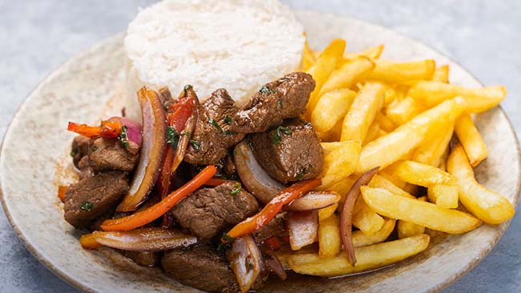
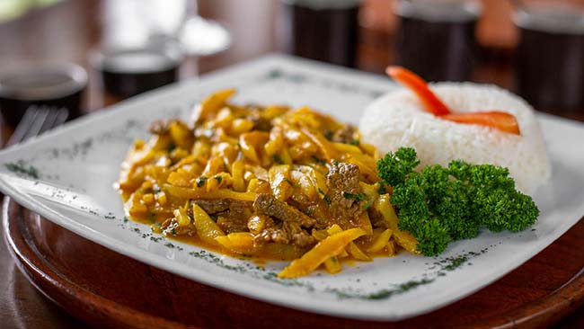
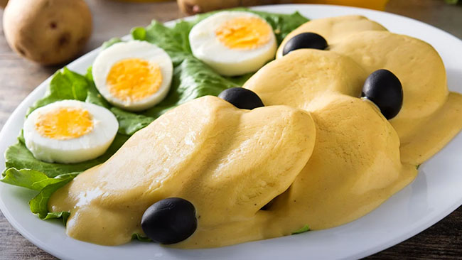
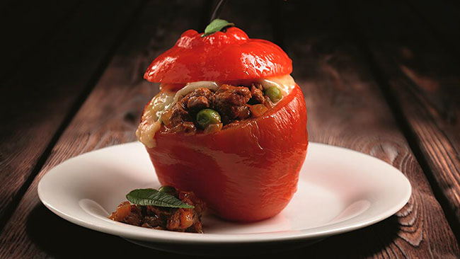
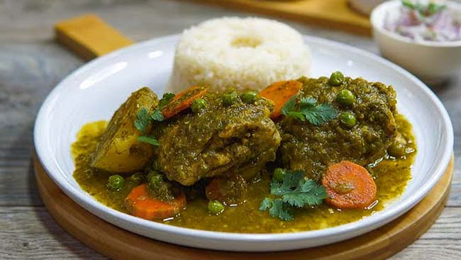
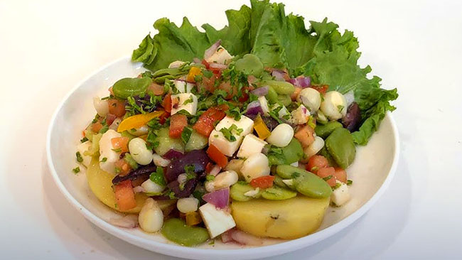
Receta de familia desde 1998. Maiz, achiote y tiempo.
Delivery propio en un radio de 5 km. Pedidos mínimos de S/ 20.